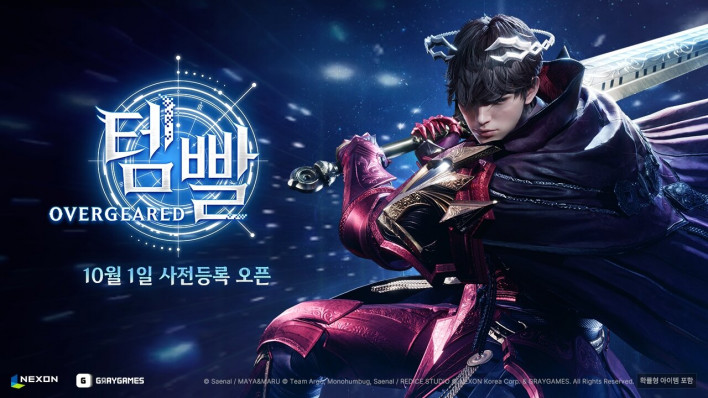
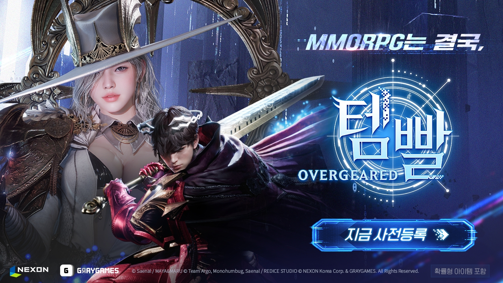

템빨 오버기어드 사전예약 사전등록 보상 받는 법, 꽃잎 토끼 펫과 카카오 경품 응모 출시일 전 정리
템빨 오버기어드 사전등록 페이지와 보도자료를 하나씩 열어 보면서 보상을 정리해 봤는데요, 보상이 한 군데가 아니라 여기저기 흩어져 있어서 처음엔 저도 헷갈리더라고요. 다 맞춰 보니 공식 페이지 보상, 카카오 경품 응모, 유튜브 구독·카카오 채널 보상 이렇게 세 갈래였어요. 웹소설 「템빨」을 원작으로 넥슨이 서비스하는 MMORPG 신작이라 원작 팬분들께는 더 반가운 소식이죠. 이 글은 2026년 10월 8일 기준으로 세 가지를 차례대로 풀어볼게요.
템빨 오버기어드 사전예약, 어디서 어떻게 하나요
템빨 오버기어드 사전등록은 공식 사전등록 페이지(temppal.nexon.com)와 카카오에서 2026년 10월 1일부터 받고 있고, 종료일은 아직 '별도 안내 시까지'로만 공지돼 있어요.
- 시작: 2026년 10월 1일(목) 오전 10시
- 참여 경로: 공식 사전등록 페이지, 카카오
- 기간: 2026.10.01(목) ~ 별도 안내 시까지
사전등록 일정은 9월 17일 보도로 먼저 알려졌고, 열린 지는 이제 일주일 남짓 됐네요. 사전 보도에는 스토어에서도 받는다는 얘기가 나왔지만 지금 안내된 건 위 두 군데라서, 이 글도 그 두 군데 기준으로 이어갈게요. 카카오 사전등록 경로는 공식 페이지 안내를 따라 주세요. 마감 날짜가 정해져 있지 않다 보니 언제 마감 공지가 뜰지 알 수 없는 만큼, 마음을 정하셨다면 먼저 해두는 쪽이 마음 편합니다.

「10월 1일 사전등록 오픈」 문구가 들어간 공식 이미지예요.
이미지: 넥슨 제공 · 인벤 글로벌 · 네이버 본문엔 받아서 재업로드 권장
템빨 오버기어드 사전등록 보상, 공식 페이지에서는 뭘 받나요
공식 페이지에서 사전등록을 마치면 동행 펫 '꽃잎 토끼'를 받고, 「미지로 향하는 길」과 「도전! 전설의 대장장이」 두 이벤트에 참여하면 갓핸드 장비와 칭호 등을 더 받을 수 있어요.
- 사전등록 완료: 동행 펫 '꽃잎 토끼'
- 이벤트 ① 「미지로 향하는 길」
- 이벤트 ② 「도전! 전설의 대장장이」
두 이벤트에서 어떤 보상이 어느 쪽에 붙는지는 보도마다 설명이 조금씩 달라서, 이 글에서는 각 이벤트에 참여하면 갓핸드 장비, 칭호 등을 받는다는 선까지만 말씀드릴게요. 펫은 사전등록만 끝내면 받는 보상이라 가장 먼저 챙기기 쉬운 쪽이에요. 아래 공식 이미지에 들어 있는 「지금 사전등록」 버튼이 바로 그 시작점이랍니다.

두 캐릭터와 「지금 사전등록」 버튼이 함께 들어간 공식 안내 이미지예요.
이미지: 넥슨 제공 · 디지털투데이 · 네이버 본문엔 받아서 재업로드 권장
카카오 사전등록 경품 응모, 지포스 RTX 5080도 있어요
카카오로 사전등록하면 지포스 RTX 5080 그래픽카드, 아이패드11 등 경품 응모권이 주어져요.
공식 페이지 보상이 사전등록을 마치면 받는 쪽이라면, 카카오 쪽은 응모권을 받아서 경품을 노리는 방식이라는 점이 달라요. 응모권은 카카오 사전등록을 한 분에게 주어지는 거라서, 사전등록부터 마치는 게 순서예요. 보도에서 확인되는 경품은 지포스 RTX 5080 그래픽카드와 아이패드11이고, 그 밖의 구성과 당첨 인원은 알려지지 않았어요.
유튜브 구독·카카오 채널 친구 추가 보상도 있어요
공식 유튜브 채널 구독과 카카오 채널 친구 추가 이벤트가 따로 진행 중이고, 보상은 골드, 사냥 지원 상자, 제작 재료 확정 상자로 알려져 있어요.
사전등록과는 별개로 도는 이벤트라서, 사전등록을 마쳤더라도 이쪽은 따로 참여해야 해요. 골드와 상자의 지급 수량, 수령 조건은 10월 8일 기준으로 공개된 곳을 찾지 못해서 공식 사전등록 페이지에서 직접 확인하셔야 해요.
확인 위치: 공식 사전등록 페이지(https://temppal.nexon.com/pre-register) · 확인되면 아래에 채워주세요.
| 항목 | 수량·조건(확인 후 입력) |
|---|---|
| 골드 | — |
| 사냥 지원 상자 | — |
| 제작 재료 확정 상자 | — |
템빨 오버기어드 출시일은? 지금 확정된 것과 아직인 것
템빨 오버기어드는 연내 국내·대만·홍콩·마카오 출시를 목표로 하고 있고, 구체적인 출시일은 10월 8일 기준으로 아직 발표되지 않았어요.
| 항목 | 현재 상태 |
|---|---|
| 퍼블리싱 | 넥슨 |
| 출시 목표 | 연내 |
| 서비스 지역 | 국내·대만·홍콩·마카오 |
| 플랫폼 | PC·모바일 크로스플랫폼 |
| 출시일 | 미발표(10월 8일 기준) |
사전등록이 시작된 10월 1일에는 개발자 영상 「템빨: 오버토크」 1화도 공개됐어요. 게임 분위기가 궁금하시면 공식 유튜브에서 볼 수 있고요, 2화 격인 「또 다른 템빨의 시작」 편도 같은 채널에 올라와 있어요. 국내뿐 아니라 대만·홍콩·마카오가 함께 묶여 있다는 점이 눈에 띕니다. 10월 8일 기준 아직 알려지지 않은 건 아래 세 가지예요.
- 두 이벤트의 미션 내용과 단계별 보상
- 카카오 경품의 당첨 인원과 응모 기간
- 사전등록 종료일(공식 안내는 '별도 안내 시까지')
보상 수량이나 종료일은 공식 페이지에서 바뀔 수 있으니, 이 글은 10월 8일 기준이라는 점만 기억해 주세요.
자주 묻는 질문
Q. 템빨 오버기어드와 템빨용사는 같은 게임인가요?
아니에요, 이름만 겹치는 완전히 다른 게임이에요. 템빨용사는 크래프톤 산하 5민랩이 만든 픽셀 아이템 머지 RPG로 2026년 5월 26일에 이미 글로벌 출시됐고, 템빨 오버기어드는 그레이게임즈가 개발한 MMORPG라서 사전등록도 오버기어드 쪽 공식 페이지에서만 하시면 돼요.
Q. 템빨 오버기어드 공식 유튜브는 어디서 보나요?
유튜브에서 '템빨: 오버기어드' 채널(@템빨오버기어드)을 찾으시면 돼요. 구독 이벤트도 이 공식 채널 기준으로 진행되고, 공식 사이트는 temppal.nexon.com이에요.
Q. 템빨 오버기어드는 원작이 있는 게임인가요?
네, 웹소설 「템빨」이 원작이에요. 웹소설과 웹툰을 합쳐 카카오페이지 누적 13억 뷰를 넘긴 IP예요. 웹툰으로도 만들어졌고, 게임 이름에 '템빨'이 들어간 이유가 여기에 있답니다.
템빨 오버기어드 사전등록 정리
한 군데만 하고 나오기 쉬운 구조이니, 아래 세 곳을 한 번에 챙겨 두시길 추천드려요. 순서는 공식 사전등록 페이지에서 사전등록 먼저, 카카오 사전등록으로 경품 응모권 받기, 마지막으로 공식 유튜브 구독과 카카오 채널 친구 추가를 하시면 빠짐없이 챙길 수 있어요. 출시일이 발표되면 그때 다시 정리해서 들고 올게요.
| 구분 | 어디서 | 받는 것 |
|---|---|---|
| 공식 페이지 | temppal.nexon.com | 꽃잎 토끼 펫, 두 이벤트(갓핸드 장비·칭호 등) |
| 카카오 | 카카오 사전등록 | 지포스 RTX 5080·아이패드11 등 경품 응모권 |
| 유튜브·카카오 채널 | 공식 유튜브 구독, 카카오 채널 친구 추가 | 골드·사냥 지원 상자·제작 재료 확정 상자 |
✔ 템빨 오버기어드 같이 보기 좋은 내용
· 템빨 오버기어드 정체는? 13억 회 웹소설 원작 넥슨 신작 MMORPG 타이틀명 확정
참고한 곳
· 템빨: 오버기어드 공식 사전등록 페이지
· 인벤 글로벌: 템빨 오버기어드 10월 1일 사전등록 시작 보도
· 인벤: 템빨 오버기어드 사전등록 보상·이벤트 보도
· 베타뉴스: 템빨 오버기어드 사전등록 보도